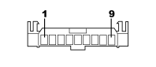

D097F SHORT CIRCUITING COUPLING (DASHBOARD)
- Path
- Electrical equipment > 3 CONNECTORS > D INTERMEDIATE COUPLINGS > D097 SHORT CIRCUITING COUPLING > D097F SHORT CIRCUITING COUPLING (DASHBOARD)
- Kind
- connector pinout (pin -> wire colour -> other end)
- Applies to
- all engines; all production periods
- Interactive page
- https://sloeber94.github.io/elrnDB-fPnd/en/#/169003143
Applies to: all engines; all production periods

Wiring | Colour |
|---|---|
NERO (black) |
Pin | Cable | Destination | |||
|---|---|---|---|---|---|
Sec.. | Colour | Node | Connect. | Pin | |
1 | 0,5 | BR (white with red stripe) | 28 | ||
3 | 0,5 | LR (blue with red stripe) | 4 | ||
4 | 0,5 | LR (blue with red stripe) | 7 | ||
6 | 0,5 | MN (brown with black stripe) | 4 | ||
7 | 0,5 | NZ (black with violet stripe) | 12 | ||
8 | 0,35 | NZ (black with violet stripe) | 2 | ||
9 | 0,5 | NZ (black with violet stripe) | 10 | ||
Topics linked from this page (7)
- 20 FACIA
- B002 JUNCTION UNIT UNDER DASHBOARD
- D001 FRONT/DASHBOARD COUPLING
- D021 DASHBOARD/AIR CONDITIONING-HEATER COUPLING
- D075 RADIO PHONE COUPLING
- D110 CLOCK SPRING AND STEERING WHEEL CONTROLS COUPLING
- M094D RADIO RECEIVER NODE (DASHBOARD)
Topics that link to this page (7)
- B002 JUNCTION UNIT UNDER DASHBOARD (DASHBOARD)
- D001 FRONT/DASHBOARD COUPLING (DASHBOARD)
- D001 FRONT/DASHBOARD COUPLING (DASHBOARD)
- D021 DASHBOARD/AIR CONDITIONING-HEATER COUPLING (DASHBOARD)
- D075 RADIO PHONE COUPLING (DASHBOARD)
- D110 CLOCK SPRING AND STEERING WHEEL CONTROLS COUPLING (DASHBOARD)
- M094D RADIO RECEIVER NODE (DASHBOARD)